features.1 unit 22: red-c (color, 0.095413); polka-dotted (texture, 0.051222); ball_pit-s (scene, 0.020909); fabric (material, 0.013910); person (object, 0.012183); arm (part, 0.012179)
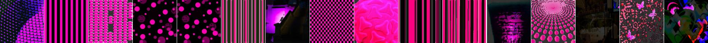
features.1 unit 38: veined (texture, 0.093703); grass (object, 0.039826); green-c (color, 0.038299); ball_pit-s (scene, 0.022761); food (material, 0.007149); screen (part, 0.006729)
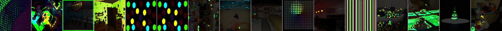
features.1 unit 53: orange-c (color, 0.065431); bubbly (texture, 0.030060); ball_pit-s (scene, 0.020712); food (material, 0.017857); ball (object, 0.009026); body (part, 0.007770)
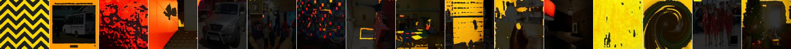
features.1 unit 41: blue-c (color, 0.059888); sky (object, 0.051158); bubbly (texture, 0.050263); skyscraper-s (scene, 0.025252); screen (part, 0.013463); plastic-opaque (material, 0.005682)
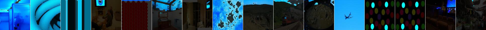
features.1 unit 16: blue-c (color, 0.059090); bubbly (texture, 0.047249); sky (object, 0.045415); skyscraper-s (scene, 0.024929); screen (part, 0.013527); plastic-opaque (material, 0.005674)
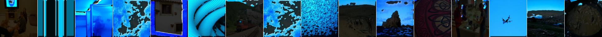
features.1 unit 36: frilly (texture, 0.057341); purple-c (color, 0.056563); sky (object, 0.030138); skyscraper-s (scene, 0.022326); screen (part, 0.007615); fabric (material, 0.007328)
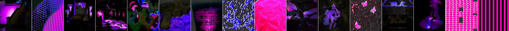
features.1 unit 20: blue-c (color, 0.050814); bubbly (texture, 0.041357); sky (object, 0.031186); beach-s (scene, 0.022555); screen (part, 0.018056); plastic-opaque (material, 0.005121)
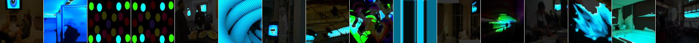
features.1 unit 59: red-c (color, 0.040627); polka-dotted (texture, 0.032042); ball_pit-s (scene, 0.013670); bus (object, 0.009180); fabric (material, 0.007392); arm (part, 0.007093)
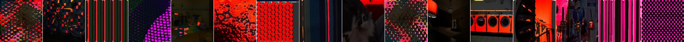
features.1 unit 2: red-c (color, 0.035634); wrinkled (texture, 0.015990); toyshop-s (scene, 0.007653); bottle (object, 0.005917); body (part, 0.004926); wood (material, 0.004555)
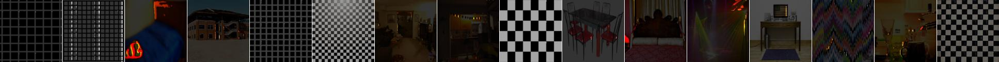
features.1 unit 21: banded (texture, 0.035345); ball_pit-s (scene, 0.025997); red-c (color, 0.025540); ball (object, 0.011259); arm (part, 0.008973); fabric (material, 0.005373)
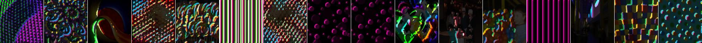
features.1 unit 54: white-c (color, 0.031486); grid (texture, 0.020572); sky (object, 0.019808); glass (material, 0.010821); pane (part, 0.006633); street-s (scene, 0.005919)
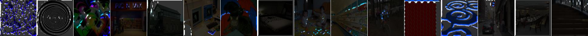
features.1 unit 52: white-c (color, 0.027904); banded (texture, 0.022052); sky (object, 0.021796); glass (material, 0.010271); shade (part, 0.006104); street-s (scene, 0.005919)
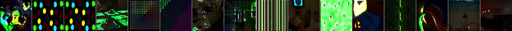
features.1 unit 64: lacelike (texture, 0.027043); forest-broadleaf-s (scene, 0.009964); motorbike (object, 0.008243); wheel (part, 0.007978); white-c (color, 0.004111); paper (material, 0.002149)
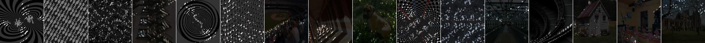
features.1 unit 61: lacelike (texture, 0.026309); forest-broadleaf-s (scene, 0.009078); motorbike (object, 0.008261); wheel (part, 0.007443); white-c (color, 0.003608); paper (material, 0.002082)
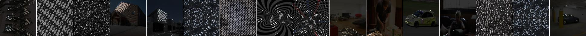
features.1 unit 3: ball_pit-s (scene, 0.025464); red-c (color, 0.024489); banded (texture, 0.023336); ball (object, 0.011653); arm (part, 0.007574); fabric (material, 0.005001)
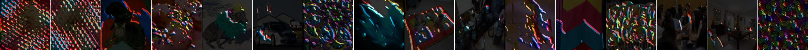
features.1 unit 17: lacelike (texture, 0.023836); forest-broadleaf-s (scene, 0.008382); motorbike (object, 0.008332); wheel (part, 0.008126); white-c (color, 0.003680); food (material, 0.002050)
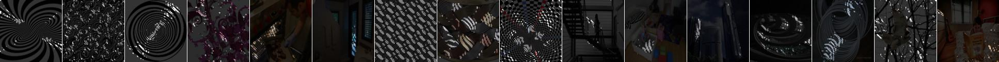
features.1 unit 57: striped (texture, 0.023512); ball_pit-s (scene, 0.010363); arm (part, 0.008177); yellow-c (color, 0.008027); person (object, 0.007974); glass (material, 0.004009)
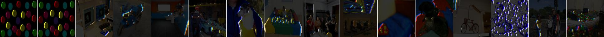
features.1 unit 55: grid (texture, 0.023469); car (object, 0.010013); building_facade-s (scene, 0.009970); roof (part, 0.005738); white-c (color, 0.004978); plastic-opaque (material, 0.003370)
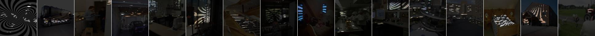
features.1 unit 50: ball_pit-s (scene, 0.022854); zigzagged (texture, 0.019612); bus (object, 0.012618); orange-c (color, 0.011284); body (part, 0.006206); food (material, 0.004977)
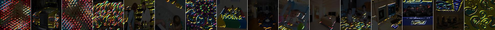
features.1 unit 37: black-c (color, 0.022291); chequered (texture, 0.012863); car (object, 0.005809); airport_terminal-s (scene, 0.004946); body (part, 0.004151); fabric (material, 0.002865)
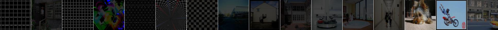
features.1 unit 6: striped (texture, 0.022210); white-c (color, 0.008970); windowpane (object, 0.007505); glass (material, 0.005180); leg (part, 0.004782); bow_window-outdoor-s (scene, 0.004013)
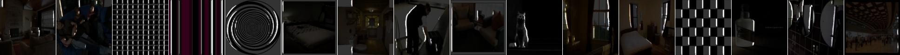
features.1 unit 44: white-c (color, 0.022052); lined (texture, 0.013461); sky (object, 0.011732); street-s (scene, 0.005264); glass (material, 0.004255); body (part, 0.002655)
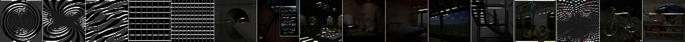
features.1 unit 39: zigzagged (texture, 0.021858); ball_pit-s (scene, 0.013374); red-c (color, 0.009131); bus (object, 0.007614); arm (part, 0.005534); food (material, 0.004591)
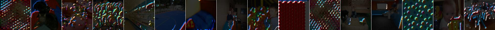
features.1 unit 48: chequered (texture, 0.021840); white-c (color, 0.009156); windowpane (object, 0.007390); glass (material, 0.005545); bow_window-outdoor-s (scene, 0.004764); arm (part, 0.004445)
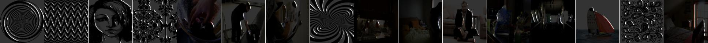
features.1 unit 63: chequered (texture, 0.021289); white-c (color, 0.008863); car (object, 0.006706); body (part, 0.005332); ceramic (material, 0.004741); cockpit-s (scene, 0.003623)
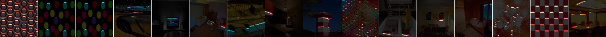
features.1 unit 5: ball_pit-s (scene, 0.021224); zigzagged (texture, 0.019108); orange-c (color, 0.014647); ball (object, 0.009789); arm (part, 0.007520); glass (material, 0.004296)
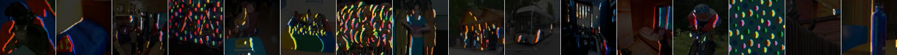
features.1 unit 43: zigzagged (texture, 0.020862); ball_pit-s (scene, 0.014287); red-c (color, 0.013809); bus (object, 0.012308); body (part, 0.007115); food (material, 0.004385)
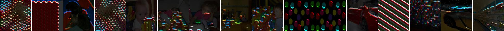
features.1 unit 23: lined (texture, 0.020806); car (object, 0.010085); building_facade-s (scene, 0.008941); crosswalk (part, 0.005372); white-c (color, 0.004929); glass (material, 0.002876)
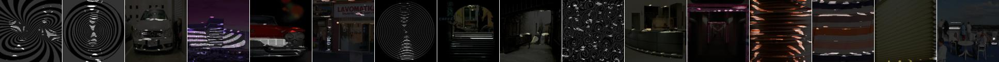
features.1 unit 18: chequered (texture, 0.020702); bus (object, 0.010380); white-c (color, 0.007221); wing (part, 0.005578); conference_room-s (scene, 0.005114); glass (material, 0.004002)
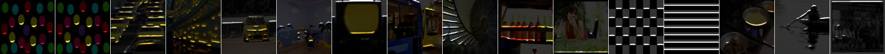
features.1 unit 15: lined (texture, 0.020644); car (object, 0.006856); black-c (color, 0.005782); building_facade-s (scene, 0.004697); frame (part, 0.004492); glass (material, 0.002251)
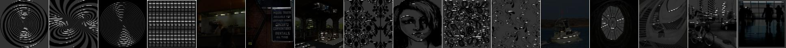
features.1 unit 47: white-c (color, 0.020533); zigzagged (texture, 0.013338); windowpane (object, 0.007539); glass (material, 0.005784); pane (part, 0.004215); living_room-s (scene, 0.003191)
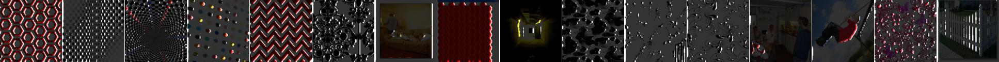
features.1 unit 30: striped (texture, 0.020434); white-c (color, 0.010880); windowpane (object, 0.006598); closet-s (scene, 0.004941); column (part, 0.004437); glass (material, 0.003867)
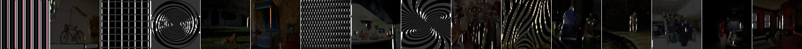
features.1 unit 26: lined (texture, 0.020194); white-c (color, 0.009163); car (object, 0.008907); building_facade-s (scene, 0.008135); roof (part, 0.004782); plastic-opaque (material, 0.002852)
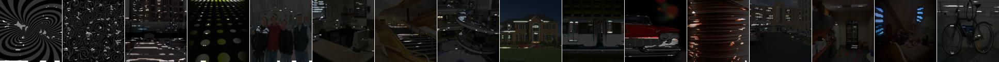
features.1 unit 42: perforated (texture, 0.019584); wheel (part, 0.009319); motorbike (object, 0.008679); forest-broadleaf-s (scene, 0.006003); white-c (color, 0.003008); food (material, 0.001749)
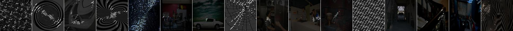
features.1 unit 51: chequered (texture, 0.019089); wheel (part, 0.008428); motorbike (object, 0.006925); black-c (color, 0.005117); junk_pile-s (scene, 0.002625); metal (material, 0.001864)
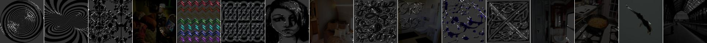
features.1 unit 62: lined (texture, 0.018939); white-c (color, 0.012016); car (object, 0.006881); building_facade-s (scene, 0.005645); crosswalk (part, 0.004046); glass (material, 0.003637)
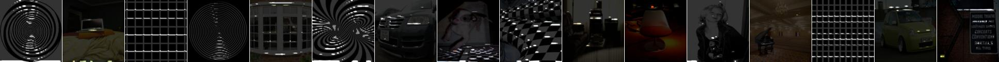
features.1 unit 27: chequered (texture, 0.018775); car (object, 0.005954); white-c (color, 0.004690); wheel (part, 0.004457); cockpit-s (scene, 0.003431); metal (material, 0.002991)

features.1 unit 4: lined (texture, 0.018523); car (object, 0.009879); building_facade-s (scene, 0.008567); white-c (color, 0.005507); crosswalk (part, 0.004749); glass (material, 0.002852)
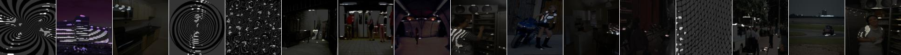
features.1 unit 7: chequered (texture, 0.018437); wheel (part, 0.007614); motorbike (object, 0.007068); black-c (color, 0.004591); bar-s (scene, 0.002481); metal (material, 0.001825)
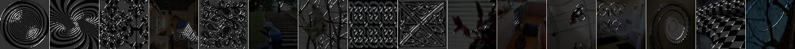
features.1 unit 24: striped (texture, 0.018364); white-c (color, 0.012491); windowpane (object, 0.006906); column (part, 0.006616); glass (material, 0.004989); closet-s (scene, 0.004786)
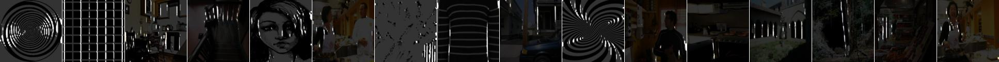
features.1 unit 34: lacelike (texture, 0.018332); wheel (part, 0.010572); motorbike (object, 0.008597); forest-broadleaf-s (scene, 0.006021); white-c (color, 0.003446); food (material, 0.001474)
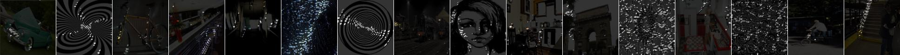
features.1 unit 10: grid (texture, 0.017673); windowpane (object, 0.010296); white-c (color, 0.006378); skyscraper-s (scene, 0.006315); pane (part, 0.004385); glass (material, 0.003506)
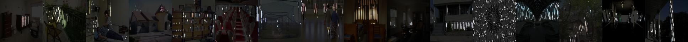
features.1 unit 28: lined (texture, 0.017642); windowpane (object, 0.010892); skyscraper-s (scene, 0.007456); white-c (color, 0.005874); pane (part, 0.004311); glass (material, 0.003909)
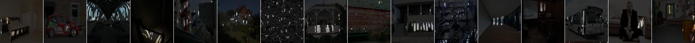
features.1 unit 9: white-c (color, 0.017558); lined (texture, 0.012541); windowpane (object, 0.007029); living_room-s (scene, 0.004063); glass (material, 0.003249); pane (part, 0.002371)
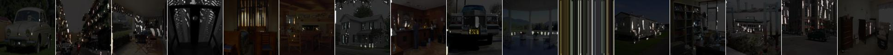
features.1 unit 12: chequered (texture, 0.017304); white-c (color, 0.007398); motorbike (object, 0.007316); wheel (part, 0.006180); bar-s (scene, 0.002725); metal (material, 0.002219)
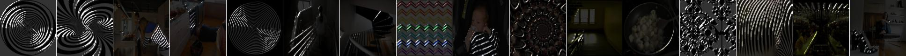
features.1 unit 33: striped (texture, 0.016675); windowpane (object, 0.006825); black-c (color, 0.005349); wheel (part, 0.004905); closet-s (scene, 0.003886); glass (material, 0.002426)
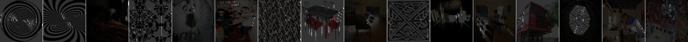
features.1 unit 19: perforated (texture, 0.016593); wheel (part, 0.010562); motorbike (object, 0.008481); forest-broadleaf-s (scene, 0.005291); white-c (color, 0.004521); metal (material, 0.001618)
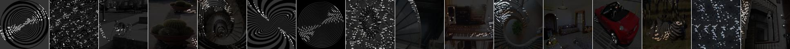
features.1 unit 45: yellow-c (color, 0.016551); ball_pit-s (scene, 0.016094); banded (texture, 0.015463); bus (object, 0.009529); body (part, 0.005411); food (material, 0.005290)
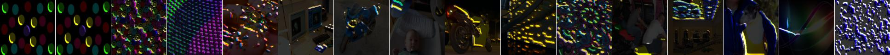
features.1 unit 1: banded (texture, 0.016471); ball_pit-s (scene, 0.015103); red-c (color, 0.011558); ball (object, 0.007611); body (part, 0.004623); glass (material, 0.003332)
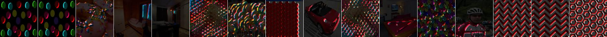
features.1 unit 40: perforated (texture, 0.016084); windowpane (object, 0.005063); wheel (part, 0.004025); black-c (color, 0.003790); balcony-interior-s (scene, 0.003461); glass (material, 0.002054)
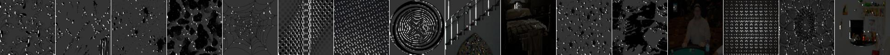
features.1 unit 60: ball_pit-s (scene, 0.016006); zigzagged (texture, 0.015607); bus (object, 0.011242); orange-c (color, 0.010994); body (part, 0.007319); food (material, 0.005383)
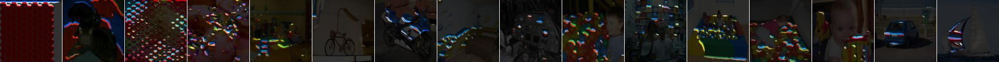
features.1 unit 29: banded (texture, 0.014488); windowpane (object, 0.009800); building_facade-s (scene, 0.006266); white-c (color, 0.004761); pane (part, 0.004195); glass (material, 0.003874)
features.1 unit 25: lined (texture, 0.014352); windowpane (object, 0.010066); skyscraper-s (scene, 0.005720); frame (part, 0.004783); black-c (color, 0.004421); glass (material, 0.003578)
features.1 unit 11: lined (texture, 0.014038); car (object, 0.005270); black-c (color, 0.005250); building_facade-s (scene, 0.004231); frame (part, 0.003890); glass (material, 0.001981)
features.1 unit 13: perforated (texture, 0.013952); wheel (part, 0.008654); motorbike (object, 0.007527); white-c (color, 0.003327); airport_terminal-s (scene, 0.002840); metal (material, 0.001777)
features.1 unit 49: lined (texture, 0.013801); car (object, 0.007591); white-c (color, 0.007141); building_facade-s (scene, 0.006182); body (part, 0.003901); glass (material, 0.003282)
features.1 unit 31: grid (texture, 0.013792); windowpane (object, 0.008859); white-c (color, 0.007775); skyscraper-s (scene, 0.005944); wheel (part, 0.004563); glass (material, 0.004233)
features.1 unit 58: meshed (texture, 0.013309); white-c (color, 0.007433); motorbike (object, 0.005996); wheel (part, 0.004535); mountain_snowy-s (scene, 0.002903); paper (material, 0.002692)
features.1 unit 8: striped (texture, 0.012882); windowpane (object, 0.005663); green-c (color, 0.005130); airport_terminal-s (scene, 0.004665); screen (part, 0.004243); glass (material, 0.002852)
features.1 unit 35: banded (texture, 0.012419); windowpane (object, 0.008706); building_facade-s (scene, 0.005107); white-c (color, 0.004681); wheel (part, 0.004486); glass (material, 0.003381)
features.1 unit 14: perforated (texture, 0.012200); car (object, 0.008208); white-c (color, 0.007818); building_facade-s (scene, 0.005554); body (part, 0.003715); metal (material, 0.002781)
features.1 unit 46: chequered (texture, 0.011681); white-c (color, 0.011335); light (object, 0.005976); glass (material, 0.004017); wheel (part, 0.003791); bar-s (scene, 0.003169)
features.1 unit 32: striped (texture, 0.011363); white-c (color, 0.006674); motorbike (object, 0.005963); wheel (part, 0.004849); bar-s (scene, 0.003719); glass (material, 0.002467)
features.1 unit 56: lacelike (texture, 0.010937); motorbike (object, 0.005699); wheel (part, 0.004663); greenhouse-indoor-s (scene, 0.003673); white-c (color, 0.002931); metal (material, 0.001892)